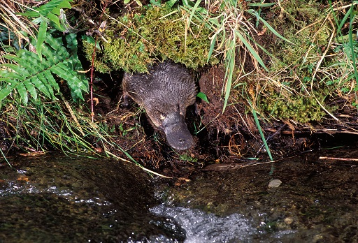

9 Studying mammals: a case study – platypus burrows¶
As you will have realised as you worked through earlier sections, there is a lot that we don’t know about the life history of monotremes. Staff at the Healesville Sanctuary in Australia have been working with other scientists to investigate the ways in which juvenile platypus use burrows. The results of their work were published in 2019 (Thomas et al.).

Figure 22 A Platypus, Ornithorhynchus anatinus, emerging from its burrow
Platypuses are semi-aquatic. They use burrows that they dig in riverbanks for shelter and sleeping during the day. They also have a second type of burrow, the nesting burrow. This burrow is excavated by a female and she uses it to lay eggs and incubate them. The young also live in the burrow while they’re dependant on the mother’s milk, a period that lasts around four months. When they first emerge from the nesting burrow, they are at about 70% of their adult weight, and they switch from milk to aquatic invertebrates as their food source. Whether the young continue to share the maternal burrow after weaning is not known. The period after the juveniles emerge is not well studied, so the team set out to fill in some of the gaps in our knowledge.
The team set nets at night along 3 km of Badger Creek in the grounds of Healesville Sanctuary. The nets were checked regularly during the night and any platypus netted could rapidly be freed and taken to a vehicle for assessment. Each platypus was checked for the presence of a microchip and if none was found, one was fitted to enable identification in the future.
Each juvenile was fitted with a radio transmitter weighing 13g. Compare this with the mass of the smallest juvenile in the study – 500g – and you can see that the transmitter was not likely to be a burden. Each platypus was radio tracked every day until the transmitter fell off. Once it fell off and 24 hours had passed with no motion, the transmitter signalled that it was motionless.
The results are summarised in Table 3, which shows sex, mass, transmitter attachment period and monitoring. The figure quoted for burrow range is the distance along the stream between the two furthermost burrows used by that individual, with all other burrows visited falling within that range.
Animal | Sex | Mass at capture (g) | Date of transmitter attachment | Transmitter attachment days | Approx. age at end of study (days) | Number of days located | Total number of burrows used | Burrow range (km) |
|---|---|---|---|---|---|---|---|---|
A | Female | 600 | 31 March 2015 | 80 | 231 | 71 | 19 | 1.26 |
B | Male | 500 | 31 March 2015 | 43 | 194 | 42 | 9 | 1.33 |
C | Female | 500 | 31 March 2015 | 37 | 188 | 35 | 7 | 1.55 |
D | Male | 750 | 31 March 2015 | 132 | 283 | 107 | 17 | 0.76 |
E | Male | 750 | 20 March 2016 | 14 | 154 | 14 | 4 | 0.65 |
F | Female | 510 | 20 March 2016 | 34 | 174 | 32 | 14 | 2.26 |
G | Female | 750 | 20 March 2017 | 110 | 250 | 101 | 4 | 0.49 |
Some general findings:
Along the 3 km stretch of creek, 74 burrow sites were identified.
The maximum number of days that an individual used the same burrow was 53.
The mean number of burrows used by an individual was 11±2.
Juveniles used multiple burrows within a small home range. They spent most of their time in frequent-use burrows, but the majority of burrows were single-use. The juveniles used between four and 19 burrows each in the 3 km stretch of creek. They routinely find new burrows within a night, displaying a degree of flexibility that might be highly advantageous. Streams are subject to seasonal changes in flow rate and flooding can occur. So, the ability to find another burrow rapidly is a valuable adaptation. The juveniles seem to keep within a narrow home range around the burrow that they were born in, until they are mature. At this point they disperse, and males establish territories for the breeding season. Keeping within a narrow and familiar home range may be of benefit to the juveniles as they need to keep clear of breeding males.
There is a lot more information in the original publication (Thomas et al., 2019), if you wish to explore the research further.